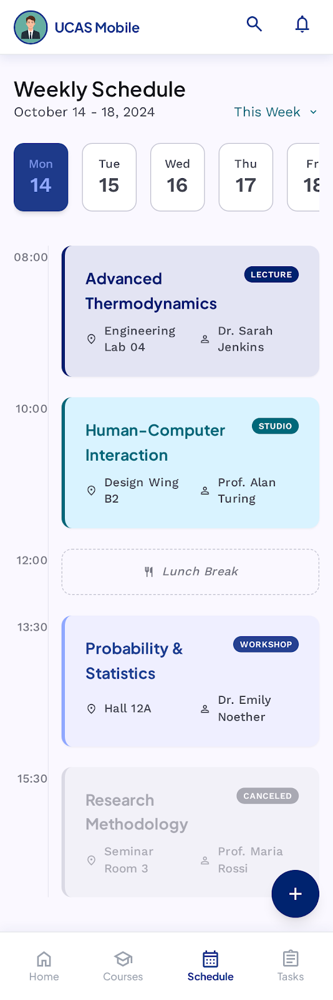
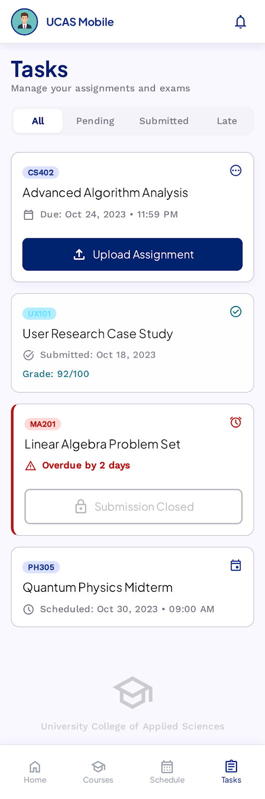

AI
Agents
LLM · Workflow · Agent — كيف يُفكِّر الذكاء الاصطناعي؟
agents AI Agent agentic AI
RAG AI Workflow MCP ReAct
Vibe Coding Prompt Engineering
ثلاث درجات. نصعدها بالتَّرتيب.
ما تعرفه فعلًا — ChatGPT، Claude، Gemini.
LLM هو نموذجُ ذكاءٍ اصطناعيٍّ مُدرَّبٌ على نصوصٍ ضخمة، يَتنبَّأ بالكلمة التَّالية بناءً على ما سَبَق.
المنظور الأبسط: function تأخذ نصًّا، وتُرجع نصًّا.
"مرحباً",
Toast.LENGTH_SHORT).show()
بلا ذاكرة، بلا أدوات، بلا مُبادرة. التَّطبيقات الشَّهيرة هي واجهاتٌ فوق LLMs.
 Claude
Claude Gemini
Gemini Copilot
Copilotما يُجيده LLM… وما يَعجِز عنه.
سؤال عام موجود في ملايين المرجع — LLM يجيب فوراً.
LLM لا يرى كودك ولا ملفات مشروعك — ما عنده إلا ما كتبته في السؤال.
قيودٌ مُحدَّدة لـLLMs.
لا يرى كودك ولا ملفات مشروعك. يحتاج منك أن تُرسل الكود حتى يستطيع المساعدة.
لا يراقب تطبيقك، لا يُنبِّهك، لا يتصرف وحده. بدون prompt منك، لا شيء يحدث.
LLM + مسار مكتوبٌ من إنسان.
نفس السُّؤال، مسارٌ جديد.
يعمل. لكن أنا كتبت المسار — لا LLM.
Workflow حقيقيّ يعمل الآن.
- 1. Git Push: يُشغِّل الـCI تلقائيًّا.
- 2. Gradle: يبني APK ويُشغِّل الاختبارات.
- 3. Claude: يكتب Release Notes.
- 4. Play Store: ينشر الإصدار الجديد.
إذا البناء فشل أو Release Notes جاءت خاطئة، أنا أرجع وأُعدِّل المسار يدويًّا.
مِئة خطوةٍ أو ألف — إن كان الإنسان يتَّخذ القرار، فهو Workflow.
حين يُصبح LLM نفسه صاحب القرار.
استبدِل الإنسان صاحب القرار
بـLLM.
هذا الفرق الوحيد. ليس عشرة فروق. فرقٌ واحد — والباقي نتائج له.
كيف يُفكِّر الـ Agent؟
الـ Agent يُصحِّح نفسه.
بلا تدخُّلٍ منك — يُكرِّر حتَّى يُتقِن.
fun sum(list: List<Int>): Int {
return list.sum()
}
fun sum(list: List<Int>): Int {
if (list.isEmpty())
return 0
return list.sum()
}
بشريّ
من صاحب القرار؟
كيف تتحدَّث مع النَّموذج.
ماذا لا تفعل؟
ماذا تفعل؟
المهمة واحدة — النتيجة مختلفة.
«راجِع هذا الكود: MainActivity.kt»
أعطني JSON: issues[{line, severity: critical|warning|nit, msg, fix}]»
{ "issues": [
{ "line": 12,
"severity": "critical",
"msg": "NullPointerException",
"fix": "use viewBinding" },
{ "line": 24,
"severity": "warning",
"msg": "heavy work on main thread",
"fix": "move to coroutine" }
]}
الـprompt المتكامل.
برمجة بالكلام — لا بالكود.
الـVibe Coding
برمجة بالحدس — لا بالكود.
"There's a new kind of coding I call vibe coding, where you fully give in to the vibes,
embrace exponentials, and forget that the code even exists."
كيف تعمل الحلقة؟
الأدوات التي تُمكِّنك.
 Cursor
GitHub Copilot
Claude Code
Cursor
GitHub Copilot
Claude Code
متى يصلح؟ متى لا يصلح؟
من الفكرة إلى المنتج.
UCAS Student App — بـ Google Stitch


Girls in ICT
Android App
تطبيق Android تفاعليٌّ مُستوحى من اليوم العالمي للفتيات في تكنولوجيا المعلومات.
يُصبح الذَّكاء اصطناعيًّا للجميع
// MainActivity.kt
class MainActivity : AppCompatActivity() {
override fun onCreate(savedInstanceState: Bundle?) {
super.onCreate(savedInstanceState)
setContentView(R.layout.activity_main)
// navigate on button click
binding.btnStories.setOnClickListener {
startActivity(Intent(this,
StoriesActivity::class.java))
}
}
}
// 3 screens:
MainActivity → stats + hero
StoriesActivity → profiles
ActionActivity → participateهذا الموقع كاملًا — صَنَعَه Agent.
من هذه الجُملة فقط: Agent بَحث في ITU، اختار اللَّوحة والخطوط، كَتَب 600+ سطرًا، اختبر، عَدَّل، وقرَّر بنفسه متى انتهى. لا إنسانٌ يَكتب المسار.
- researchITU Resolution 70 · تاريخ 23 Apr 2026 · إحصائيَّات ICT
- designاختار اللَّوحة، الخطوط، النِّظام الشَّبكيّ — لا قالب
- buildكتب 600+ سطرًا، ملفٌّ واحد، بلا build step
- RTLطباعة عربيَّة، bidi، خَلْط عربيّ/إنجليزيّ
- motionكشف عند التَّمرير، marquee، تفاعلات دقيقة
- a11yreduced-motion، semantic HTML، تباين
// human edits to output: 0
= Agent.